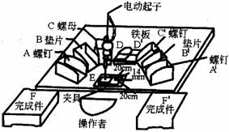

时间研究的步骤
进行时间研究首先要选择研究对象。
时间研究的目的是为了制定先进合理的工时定额，同时时间研究要花费人力和时间，因此，慎重选择要研究的工作和被观测的操作者，对于确保时间研究的成功是非常重要的。在选择研究对象问题上，一要明确研究目的，二要制定全面计划。
例如，对于制造企业，如果是为生产计划制定工时定额，那么就要从产品出发，根据产品的零件表和每个零件的工艺路线制定计划。
(1)确定出该产品生产所包括的作业项目、所使用的设备和工作地。
(2)制定研究计划，说明时间研究应包括哪些作业项目和工作，各作业绩项目和工作研究的轻重缓急和先后顺序。
(3)从那些对产品生产和生产计划最关键的作业开始，进行时间研究。
制定时间研究计划，是确保正确选择研究对象的重要前提条件。
对象选择的另一方面是选择操作者。对操作者的要求是具有平均技术水平和熟练程度，
选择了研究对象之后，按下面的步骤进行时间研究。
第一步 收集资料
为制定某一操作标准时间，必须对整个操作有详细而完整的了解，不能遗漏操作的任何一部分，或有任何错误，否则将导致标准时间的失误。
通常，记录资料的项目均应填入时间研究表格的表头或首页。按资料的性质分类如下：
(1)能迅速识别研究内容的资料。
(2)能正确识别制造的产品或零件的资料。
(3)能正确识别制造程序、方法、工厂或机器的资料。
(4)工装、工作现场的布置图、零件表面加工图。
(5)能识别操作者的资料。
(6)研究的期间。
(7)有关工作环境的资料。
第二步 单元划分
秒表所测定的时间并非其操作的总时数，因总时间内所包括的动作，不但数量多，而且性质亦很复杂，很难评比其快慢，因此应将操作分为若干单元，每一单元的动作不但数量减少，而且性质相同，所以个别评比每一单元的快慢要容易而准确得多。这些个别单元的时间加起来就等于整个操作的总时数。
测时前应将方法标准化，方法不同，时间亦不同。所以如果方法尚未标准化，将使时间研究毫无意义。
划分操作单元的原则：
(1) 单元之间界限清楚。每一单元应有明显易辨认的起点和终点。
有时为方便辨认，将工作循环中，一个操作单元中止，另一个操作单元开始的瞬间称为分解点或定时点，在划分操作单元时，明确分、解点。
(2) 各单元时间长短适度。
单元时间愈短愈好，但以使时间研究人员能精确测记为宜。
(3)人工操作单元应与机器单元分开，因为时间研究主要测定人工单元。
(4)尽可能使每一人工单元内的操作动作为基本动作(如伸手、握取等)，以便易于辨认。
(5)不变单元与可变单元应分开。不变单元是指在各种情况下，其操作时间基本相等，如焊接操作中，手拿焊枪应为不变单元。而可变单元是指因加工对象的尺寸、大小、重量的不同而变化的单元。在焊接操作中的焊缝所需时间是随焊缝的长短而变化、故为可变单元。
(6)规则单元、间歇单元和外来单元应分开。规则单元是加工每个工件都有规则性地出现的单元，间歇单元是加工过程中偶尔出现的单元，外来单元为偶发事件，且将来不需列入标准时间以内。
(7)每一单元应有完整而详细的说明。
例如：切换电视机频道的操作：“从椅子上起身，走到电视机处，切换频道，返回椅子旁，坐下。”，进行动作单元划分，结果如表9-1所示。
表9-1 切换电视机频道的操作动作单元划分
|
作业分解 |
操作单元 |
观测点 |
|
1．从椅子上起身 |
1．走到电视机处 |
抓住旋钮的瞬间 |
|
2．走到电视机处 |
2．切换频道 |
手松开旋钮的瞬间 |
|
3．抓住旋钮 |
3．返回椅子旁 |
坐下的瞬间 |
|
4．旋转旋钮 |
4．就座 |
从椅子上起身的瞬间 |
|
5．手松开旋钮 |
||
|
6．返回椅子旁 |
||
|
7．坐下 |
||
|
8．就座 |
例如：将两块铸铁板用螺钉连接起来的动作单元划分。

图9-3 将两块铸铁板用螺钉连接起来的操作台布置
将两块铸铁板用螺钉连接起来的操作台布置如图9-3所示，划分的动作单元如表9-2所示。
表9-2 动作单元
|
操作单元编号 |
说 明 (左手) |
操作单元编号 |
说 明 (右手) |
|
1 |
自左手C盒内取一螺母( 放螺母与左边夹具的E梢内( 自左边B盒内取一垫片( 放垫片于螺母上( |
1 |
自右手C'盒内取一螺母( 放螺母与右边夹具的E'槽内( 自右边B'盒内取一垫片( 放垫片于螺母上( |
|
2 |
自前方放铁板堆D上取第一块铁板( 放第一块铁板于左边夹具E内( 自前方放铁板堆D上取第二块铁板( 放第二块铁板于左边夹具E内( |
2 |
自前方放铁板堆D'上取第一块铁板( 放第一块铁板于右边夹具E'内( 自前方放铁板堆D'上取第二块铁板( 放第二块铁板于右边夹具E'内( |
|
3 |
自左边B盒内取一垫片( 放垫片于左边铁板近中间孔处( 自左边A盒内取一螺钉( 放螺钉穿过垫片、铁板、并转螺钉一、二次，以便放入螺母 |
3 |
自右边B'盒内取一垫片( 放垫片于右边铁板近中间孔处( 自右边A，盒内取一螺钉( 放螺钉穿过垫片、铁板并转旋螺钉一、二次，以便放入螺母 |
|
4 |
握左边夹具内之铁板( 同 上 握右边夹具内之铁板( 持住铁板 同 上 |
4 |
自夹具上方 放电动扳手于左边螺钉头上( 用电动扳手转紧螺钉 放电动扳手于右边螺钉上( 用电动扳手转紧螺钉 放回电动扳手( |
|
5 |
取左边装好的铁板( 放于左边箱内排列好( |
5 |
取右边装好的铁板( 放右边箱内排好( |
第三步 测时
测时是指对工人的工序作业时间消耗情况进行现场观测、记录统计和分析计算的一种时间研究方法。它主要用于研究工序作业中基本操作、辅助操作或动作的时间消耗，为选择最佳操作方法或作业时间标准提供依据。
(一)测时的方法
测时的方法有：归零法、累积记时法、周程记时法、连续测时法等。
1．归零法
方法：第一单元开始时，开动秒表，第一单元结束时，即按停秒表。读取表上读数，然后使表针回复到零位。次一单元开始，再开动秒表，如此不断记录每一单元时间。
缺点：现场记录时，因为要归零，所以费时，且易漏记。
观测者对每个操作独立进行反复交替观测，因此该方法也称反复测时法，适用于测定少于0.05min的延续时间。
2．累积测时法
方法：用两个秒表，由一连杆机构连接。一表开动，另一表即停止；一表停止，另一表开动，停止表上的时间，读取后立即归回零位。
缺点：测时设备携带不便。
3．周程测时法
方法：采用每次去掉一个单元的方法来测时。单元甚小且周程甚短的操作，可用此方法
测时。
例如：假设某工序有a、b、c、d、e共5个操作单元，用周程测时法测时，每次只记录4个单元的时间值：
|
名称 |
被记录单元 |
时间值（秒） |
备注 |
|
A |
a+b+c+d |
28 |
去掉e |
|
B |
b+c+d+e |
30 |
去掉a |
|
C |
a+c+d+e |
29 |
去掉b |
|
D |
a+b+d+e |
23 |
去掉c |
|
E |
a+b+c+e |
23 |
去掉d |
设X=(a+b+c+d+e)，则4X=4(a+b+c+d+e)=A+B+C+D+E=133(秒)，X=33.25秒，则：
a=X-B=(33.25-30)=3.25(秒)
b=X-C=(33.25-29)=4.25(秒)
c=X-D=(33.25-23)=10.25(秒)
d=X-E=(33.25-23)=10.25(秒)
e=X-A=(33.25-28)=5.25(秒)
4．连续测时法
最常用方法：当第一单元开始时，开动秒表，在整个研究过程中不使秒表指针回零，而任其继续走动。仅当每一单元完毕时看指针并记录其表面时间，待全部记录完毕，再将两相邻单元的表面时间相减，以求得每个单元的时间。
例如：某一操作共有4个单元，各单元记录如下：
|
单元① |
单元② |
单元③ |
单元④ |
||||
|
R |
T |
R |
T |
R |
T |
R |
T |
|
09 |
09 |
15 |
06 |
28 |
13 |
32 |
04 |
其中，R——现场观测时间读数，记录每一单元末的秒表表面上的时间。
T——该单元时间。
用此方法现场记录时，因表针开动后不再操作，任其继续走动，至各单元末记录其时间，比较方便，且一起连续记时，能保证所有时间均可记录无遗漏。
要注意的是，秒表上1小格为0.01min，习惯上，为简化记录起见，仅记为
表9-3 连续测时法现场记录表
|
① |
② |
③ |
④ |
⑤ |
外来单元 |
|||||||||
|
周程 |
R |
T |
R |
T |
R |
T |
R |
T |
R |
T |
符号 |
R |
T |
说明 |
|
1 |
13 |
13 |
27 |
14 |
53 |
26 |
X |
65 |
A |
86 53 |
33 |
更换传动带 |
||
|
2 |
84 |
19 |
104 |
20 |
27 |
23 |
39 |
12 |
/ |
B |
425 94 |
31 |
更换并调整螺钉 |
|
|
3 |
52 |
13 |
71 |
19 |
205 85 |
20 |
85 71 |
14 |
222 |
17 |
C |
工具掉地上，拾起擦灰，并调整 |
||
|
4 |
38 |
16 |
53 |
15 |
306 |
A 20 |
22 |
16 |
38 |
16 |
D |
|||
|
5 |
53 |
15 |
69 |
16 |
87 |
19 |
431 |
B 13 |
49 |
18 |
E |
|||
|
6 |
64 |
15 |
81 |
17 |
501 |
20 |
23 |
C 22 |
41 |
18 |
F |
|||
|
7 |
G |
|||||||||||||
(二)现场情况的记录
现场测时时，很可能遇到下列情况，时间研究人员可参照下述方法进行处理。
(1)如测时时来不及记录某一单元的时间，则应在该单元“R”行中记一“×”或“M”，表示失去记录。不准按照估计随意补入，以免影响其真实性。如表9-3的第一周程。
(2)如操作中发现操作者省去某一单元，则在该单元的“R”行中划一斜线“/”，表示省去。如表9-3的第二周程。
(3)如操作者不按照单元的顺序进行，则在该单元的“R”行内划一横线，横线上记完成时间，横线下记开始时间。如表9-3的第三周程。
(4)外来单元的发生可能有两种情况，一种为正巧在某一单元完成时发生，另一种即在某单元内任何时间发生，现分别说明其记录方法。
正巧在某一单元完成时发生。此时，每当发现有外来单元时，则于次一单元发生的“T”行记一英文字母，如第一次发生则记为A，第二次发生则记为B，如此类推，且所有外来单元，亦包括单元内任何时间发生者，均取用英文字母。并于时间研究表右边“外来单元”栏，英文字母“R”横线下方，记入开始时间，待外来单元完成时，将其完成时间记入横线的上方，完成时间减去开始时间即为该外来单元的时间，记入“T”行内。最后，将该外来单元的内容记入“说明”栏内。如表9-3的第四周程。
在某单元内任何时间发生。则在该单元的“T”行内记下英文字母，其他与第一情形完全相同。如表9-3的第五周程。
外来单元时间很短。此时，无法按照上述方法记录时间，如物掉地上，拾起后随即开始工作。则不必分开记时，而是同单元时间一起记录在该单元时间内，同时在该单元“T”行内，记一英文字母，并在说明栏内说明该单元情况。或在“T”栏内的数字上加一圆圈，因为小于0.06min，可以忽略。如表9-3的第六周程。
(三)剔除异常值
记录之后，在计算平均值之前，必须剔除观测数值内的异常值。
异常值：某一单元的秒表读数，由于一些外来因素的影响，而使其超出正常范围的数值。
剔除异常值的方法有多种，常用的是三倍标准差法。其计算方法如下：
假设对某一操作单元观测n次所得时间为：Xl，X2，X3，…，Xn。
则平均值为：
标准偏差为：
正常值为内的数值，超过者即为异常值。
偏差上限为，也称为管制上限UCL，偏差下限为，也称为管制下限LCL，在上限和下限之间均视为正常值。凡不在这个区域内的数值，即异常值应予以剔除。
根据正态分布的原理，在正常情况下，若计算同一分布的抽样数值，其99.7%的数据应在均值正负三倍标准差的区域内。
例如：某一操作单元，观测20次，其中漏记一次，其余19次观测数据如下：20、20、21、20、22、20、19、24、20、22、19、21、20、28、21、20、20、22、M、20，则：
，
管制上限UCL=21+(3×2)=27，管制下限LCL=21-(3×2)=15。数值28大于27，在管制上限之外，为异常值，应予以剔除。
(四) 确定观测次数
同一操作者连续操作时，因为工具、材料、零件等放置位置并不完全相同，所以取用时间也就不相同，而且读秒表也有误差，使各单元每一次所用时间并非完全相同，同时，操作者的技术程度、操作本身的稳定性、测时的精度要求不一等因素对观测次数也有不同的要求。
时间研究要求对同一项作业进行多次重复的测定，因而需要事先确定观察次数。观测次数的确定是建立在统计学原理基础上，可根据统计学中提供的公式计算。常用的确定观察次数的方法是误差界限法。
在误差为±5%，可靠度为95%时，误差界限法计算观测次数N的公式如下：
式中Xi——每一次秒表读数；
n——观测次数的初始值。
例如：某一单元试行观测10次，结果如下：7，5，6，8，7，6，7，6，6，7。平均值欲得±5%误差，95%可靠度，问需观测多少次?
此处n=10，Xi和Xi2的值如下：
|
i |
1 |
2 |
3 |
4 |
5 |
6 |
7 |
8 |
9 |
10 |
合计 |
|
7 |
5 |
6 |
8 |
7 |
6 |
7 |
6 |
6 |
7 |
65 |
|
|
49 |
25 |
36 |
64 |
49 |
36 |
49 |
36 |
36 |
49 |
429 |
则有： ，由于已测了10次，需再测15次。
(五)决定观察时间
取剔除了异常值的每一单元所有时间值的算术平均数为该单元的操作时间。

第四步 评定正常时间
(一)评比与正常时间
根据上述步骤，已求出一个操作单元具有代表性的时间值。此时间值为该操作者个人的平均时间，因为这个人的动作可能比标准动作快，也可能比标准动作慢，所以还不能作为标准时间。 必须利用“评比”予以修正，使其成为不快不慢的正常时间。
评比就是时间研究人员将所观测到的操作者的操作速度，与自己理想中的理想速度(正常速度)作一想像的比较。因此，时间研究人员必须能在自己头脑中建立一个理想的速度，然后再根据这个理想速度去评比操作者动作的快慢。
(二)评比尺度
为了将操作者的速度与理想速度作精确的比较，必须有一个评比的尺度。常用的评比尺度有三种：60分法、100分法以及75分法。通常采用前两种。
60分（60点）法：凡观察速度与理想速度完全相同的给予60分。观察速度大于理想速度，就给予60分以上的分数；如观测速度小于理想速度，则给予60分以下的分数。至于60分以上或以下多少分，则全凭经验与判断，经验愈多，判断愈精确，评比误差愈小。
100分法：与60分法相同，只是当观察速度与理想速度完全相同的给予100分。
75分法：在有刺激的情况下比无刺激的情况下速度要快1/3，所以可依照此种有刺激情况下的速度为理想速度的标准。
(三)单元观测时间与正常时间的关系
正常评比是一个常数（60分、或100分、或75分）。
在决定正常时间时，测时必须准确，时间研究人员所给的评比也必须正确，这样，正常时间才能准确。
(四)评比时的注意事项
评比是应注意以下各点：
有效操作速度。评比时不应只注意其动作的速度。
用力大小。影响操作者动作的快慢，用力的大小往往是原因之一，对用力的大小要给予合适的评比。
困难操作的评比。简单的操作动作时间快，复杂、困难的操作动作时间慢。所以在评比时，应对操作给予判断，给予适当的评比值。
需要思考操作的评比。对于这种操作，评比困难，必须对此类操作有实际经验，才能给予正确的评比。
(五)决定正常时间的代表值
整个操作的正常时间，可以用以下的方法来确定其代表值：
方法1：每个单元的观测时间乘于每个单元的评比百分率，相加并除于观测次数。
方法2：选用最常发生的观测时间乘平均评比值。
第五步 确定宽放时间
宽放时间是操作时所需的停顿和休息时间。正常时间是操作者连续稳定工作所需的时间。在制定标准时间之前，必须确定操作时所需的停顿和休息时间，将其加入正常时间，操作者才能稳定地维持正常的操作。
(一)增加宽放时间的原因
(1)操作周程中操作的疲劳，需要休息。
(2)操作者个人的需要，如喝水、上厕所、擦汗、更衣等。
(3)操作者听取班长或车间主任的指示，或本人指示助手等，而使本身工作停顿。
(4)操作者领材料、工件、物件及完成件，工具的送走等。
(5)操作中等待检验，等待机器的维修、保养、等待材料等。
(6)操作者从事操作前的准备工作，如清理工作场地、擦拭机器、所需物件的准备，以及操作中，操作完成后工作场地、机器、物料及工具的清理工作。
(7)操作者从事刀具的刃磨、更换传动带、调整机器等工作。
(二)宽放时间的种类
(1)私事宽放。这是考虑操作者生理上的需要的宽放时间，如喝水、上厕所、擦汗、更衣等。对于轻松工作，一般为正常时间的2%-5%；对于较重工作(或不良环境)则大于5%；对于举重工作(或天气炎热)定为7%；一般情形多以正常时间的5%计。
(2)疲劳宽放。考虑操作者消除疲劳、恢复劳动机能所需要的宽放时间，到目前为止，尚无一满意的方法来计算疲劳的宽放值，所以一般按估计的方法来确定。
(3)程序宽放。是操作中无法避免的延迟所需要的宽放时间。也就是说这种宽放为补偿操作者因其从事的操作内发生强迫等待的时间。
(4)特别宽放时间。按其发生的情形分成3类：周期动作宽放时间、干扰宽放时间、临时宽放。
(5)政策宽放时间。政策宽放并非时间研究的一部分，但应用上实际有效。它是作为管理政策上给予的宽放时间。它不但能配合事实上的需要，而且能保持时间研究的原则不受破坏。
(三)宽放率和宽放时间计算
正常时间的一定百分率为宽放率。
宽放率（%）=（ 宽放时间 / 正常时间 ）×100%
宽放时间 = 正常时间×宽放率
第六步 制定标准时间
由最初用秒表测得的时间，经评比率修正为正常时间，然后考虑宽放时间的加入，最后得到标准时间。其构成如图9-4所示。

图8-2 标准时间的构成
例如：某一单元观测时间为0.8min，评比为110%，宽放为5%，则标准时间应为多少?